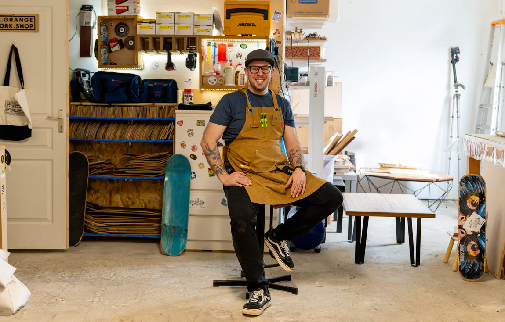
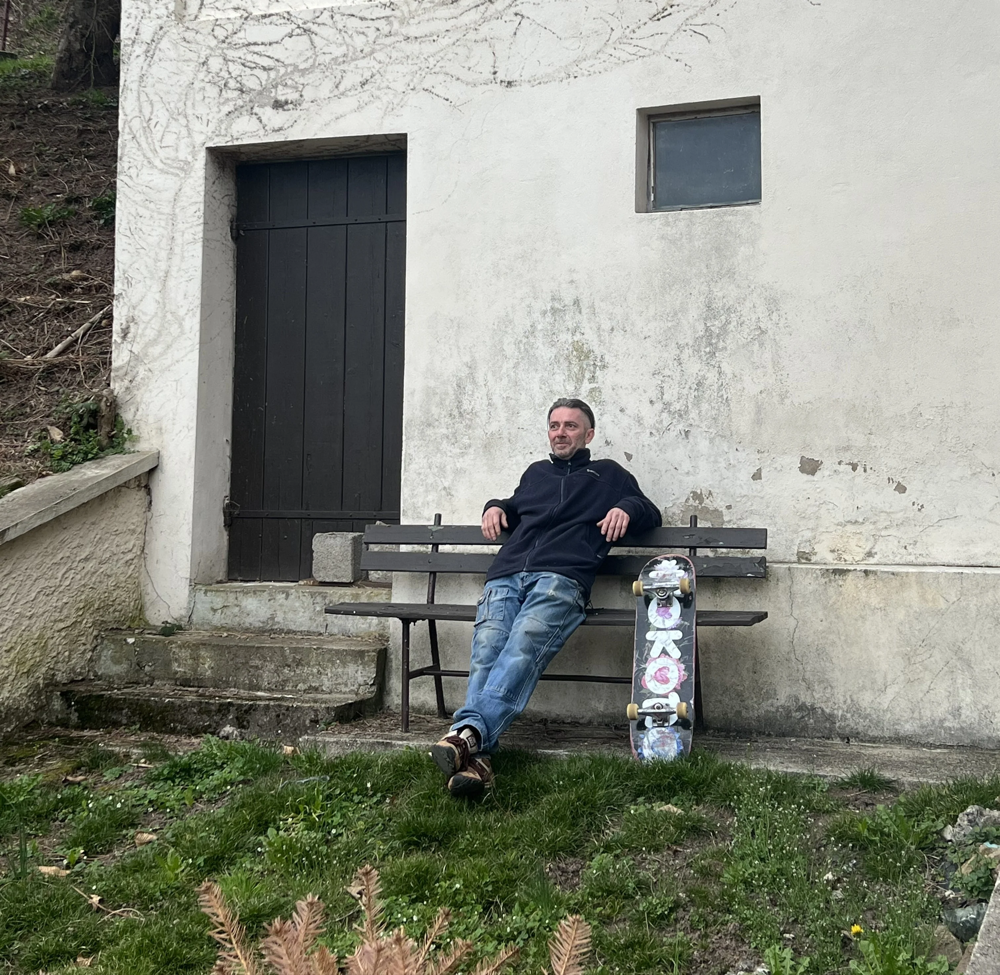

Chez Kokoro Project, chaque planche de skateboard raconte une histoire. Celle d'un rêve, d'une passion… mais aussi d'une responsabilité envers la planète.
à fabriquer des objets. C'est imaginer des planches durables, pensées pour s'inscrire dans une démarche respectueuse de l'environnement.

Planches FSC
Érable canadien certifié FSC — gestion forestière responsable.
5 % reversés
À des associations environnementales pour chaque planche vendue.

Communauté
Rassembler des riders engagés autour de valeurs communes.
Associations
Lors de la campagne de financement de Kokoro Project, 5 % des ventes du modèle Kintsugi (176 €) ont été reversés à Alsace Nature.
Tout au long de l'année, 5 % des ventes de toutes les planches Kokoro sont également reversés à des associations environnementales, œuvrant pour la préservation de la nature et la promotion d'un mode de vie durable.
Alsace Nature est une fédération regroupant plus de 70 associations environnementales en Alsace. Elle agit pour la protection de la nature, la promotion du développement durable et la sensibilisation du public aux enjeux environnementaux.

Partenariat
La Grange Workshop
La Grange Workshop est un atelier de menuiserie qui crée du mobilier unique à partir de vieilles planches de skateboard récupérées. Kokoro Project a intégré ce projet dans sa démarche de responsabilité environnementale.
Pour chaque planche récupérée par La Grange Workshop, Kokoro offre un bon de réduction de 4 € valable sur notre site, ainsi qu'un code promo exclusif de 10 % (KOKORO) sur l'ensemble de la boutique La Grange Workshop.
Une façon concrète de prolonger la vie de chaque planche et de réduire les déchets liés au skateboard.
Notre Vision
Kokoro Project, c'est bien plus qu'une marque de skateboard. C'est un projet qui cherche à créer des planches éthiques, à rassembler une communauté engagée et à sensibiliser le monde du skate aux enjeux environnementaux.
Chaque planche vendue est un acte militant, une façon de soutenir une économie plus responsable et de contribuer à un avenir meilleur pour la planète et pour le skateboard.

Fabrication
Nos planches sont fabriquées en Espagne en érable canadien certifié FSC — une garantie de gestion forestière responsable.
FSC
Certification forestière internationale
5 %
Des ventes reversés chaque année
🇪🇺
Fabriqué en Europe
"Créer des skateboards ne se limite pas à fabriquer des objets. C'est imaginer des planches durables, pensées pour s'inscrire dans une démarche respectueuse de l'environnement." — Kokoro Project
Agissez
Rejoignez la communauté Kokoro et faites partie d'un mouvement qui veut changer les choses.